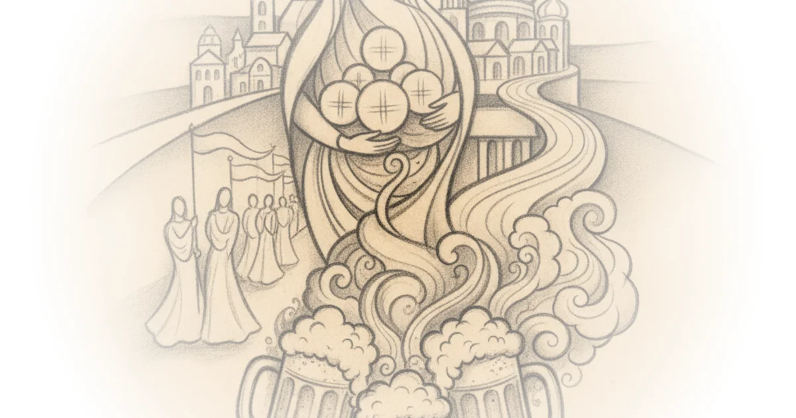
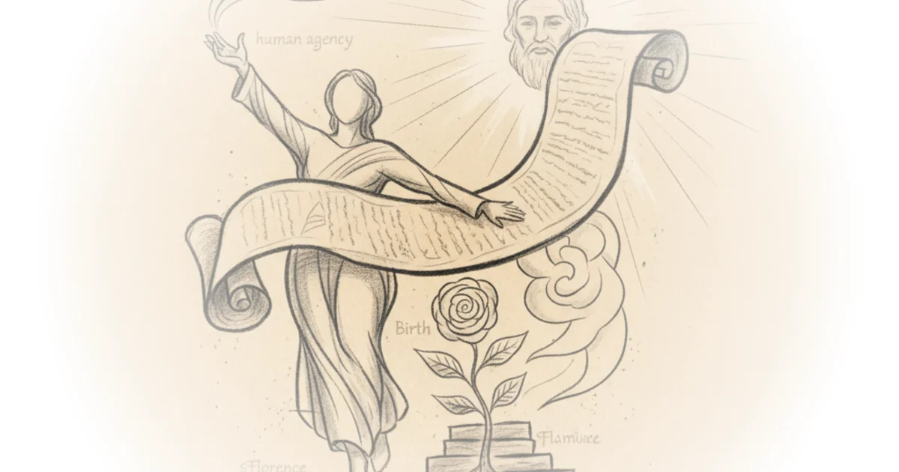

‘Endemic to the culture’ - closed consultation process raises concern before charter vote Various · The Pillar ·Jun 10, 2026 · 10 min read · Faith
‘The most beautiful diocese in the world’: Meet the bishop of Southern Russia Various · The Pillar ·Jun 9, 2026 · 16 min read · Faith
„Ich glaube, mein bistum ist das schönste der welt“: Begegnung MIT bischof clemens pickel Various · The Pillar ·Jun 9, 2026 · 14 min read · Faith
España, papal anniversaries, and the toy story story Various · The Pillar ·Jun 9, 2026 · 19 min read · Faith
The monstrance, the Congress, and el zorro: Highlights of leo in Spain Various · The Pillar ·Jun 8, 2026 · 17 min read · Faith
In the clubhouse with Christ — the ministry of mlb chaplains Various · The Pillar ·Jun 5, 2026 · 10 min read · Faith
Corpus christi, ‘come una madre’, and real beer Various · The Pillar ·Jun 5, 2026 · 10 min read · Faith 
Meet pedro ballester: An englishman with a cause Various · The Pillar ·May 28, 2026 · 21 min read · Faith
St. Philip, the encyclical and (my) human agency Various · The Pillar ·May 26, 2026 · 12 min read · Faith 
Live updates: ‘Magnifica humanitas’ aims to address ‘culture of power’ in AI Various · The Pillar ·May 25, 2026 · 10 min read · AI & Tech
John carroll, the news, and the pope's encyclical Various · The Pillar ·May 19, 2026 · 14 min read · Faith
‘Never going out of style’ — how Catholic colleges aim to navigate the demographic cliff Various · The Pillar ·May 16, 2026 · 14 min read · Faith
Ahead of leo visit to Spain, monument remains controversial Various · The Pillar ·May 15, 2026 · 13 min read · Faith
On the marches, extra omnes, and playing God Various · The Pillar ·May 15, 2026 · 18 min read · Faith
If the sspx consecrations happen, who exactly is excommunicated? Various · The Pillar ·May 13, 2026 · 14 min read · Faith
Social media, situationships, and a ‘ring by spring’ — the complex dating world for gen z Catholics Various · The Pillar ·May 13, 2026 · 13 min read · Faith
A bishop with three hats: Stock on england’s potential triple diocesan merger Various · The Pillar ·May 8, 2026 · 11 min read · Faith
Reviewing ‘raphael: Sublime poetry’ at the met Various · The Pillar ·May 8, 2026 · 14 min read · Literature
Leo’s first year, the germans’ coming surrender, and met life Various · The Pillar ·May 8, 2026 · 11 min read · Faith
Where is the Rome-Germany blessings battle heading? Various · The Pillar ·May 6, 2026 · 10 min read · Faith
Pray for the pope, and bagels as the basis culture Various · The Pillar ·May 5, 2026 · 17 min read · Faith
Louisiana ‘vos estis’ complaint remains unanswered Various · The Pillar ·May 1, 2026 · 15 min read · Faith
Thank God first, ‘gotta be the shoes’, and papal safety Various · The Pillar ·Apr 28, 2026 · 19 min read · Faith
What does the end of the orbán era mean for the church? Various · The Pillar ·Apr 22, 2026 · 10 min read · Faith
Is a Vatican office ‘investigating’ benedict's resignation? Various · The Pillar ·Apr 21, 2026 · 17 min read · Faith